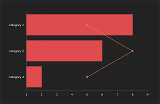
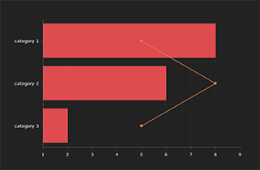

GLOBOCAN 2012 : Estimated Cancer Incidence, Mortality and Prevalence Worldwide in 2012
 


The aim of the project is to provide contemporary estimates of the incidence of, mortality and prevalence from major types of cancer, at national level, for 184 countries of the world. The GLOBOCAN estimates are presented for 2012, separately for each sex. 1-, 3- and 5-year prevalence data are available for the adult population only (ages 15 and over).
Please note that: